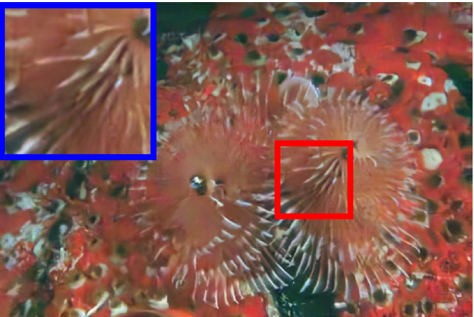

NECTR · ICML 2026
Trainable Nonexpansive Denoisers for Contractive Image Reconstruction
Indian Institute of Science, Bengaluru
Use a neural network to learn where to aggregate, and a structurally controlled linear operator to perform the aggregation.
The idea
Learn similarities.
Control the operator.
Expressive pretrained denoisers can produce strong reconstructions, but repeated application need not converge. Constraining an entire neural network can limit its denoising power.
NECTR separates weight prediction from image aggregation. A neural network predicts positive, spatially varying weights using a reference image and its permuted variants. With the reference fixed, the denoising operator is linear in the reconstruction variable.
Inverse-consistent weights make the unnormalized kernel symmetric. The paper’s symmetrization and normalization then yield a nonnegative, symmetric stochastic denoiser that is globally nonexpansive.
The convergence result concerns the symmetrized denoiser with a frozen reference \(\xi\). It assumes positive inverse-consistent weights, an inverse-closed permutation set containing the identity, transitivity, and \(\mathbf{A} e \neq 0\). The short adaptive warm-up precedes the fixed-reference phase.
Expressive weight prediction
The neural predictor learns image-dependent similarities without a global Lipschitz constraint on the predictor itself.
Global operator control
For each fixed reference, the symmetrized aggregation operator has spectral norm equal to one.
Contractive reconstruction
Combined with the data-fidelity proximal step, the operator is contractive under the stated assumptions and converges to a unique fixed point.

Denoising showcase
Noise suppression
with learned aggregation.
Slide to compare the noisy input and NECTR output from Figure 2. The reported PSNR is 14.14 dB for the input and 26.42 dB for NECTR at \(\sigma_n\) = 50/255.
A comparison of saved images from the paper. Full baseline results appear below.
Reconstruction results
Deblurring and superresolution with a fixed reference after warm-up.
Related software
Accelerating
kernel aggregation.
The shift-dependent aggregation in NECTR is also the target of neural_shift_cuda, my C++/CUDA extension. It gathers shifted inputs, batches weight prediction, and reduces weighted image contributions in parallel.
The repository reports full training-step speedups of 1.61\(\times\) and 1.33\(\times\) for the original NECTR1 and NECTR2 models at B = 8, 64 \(\times\) 64, R = 5, fp32. The extension preserves the aggregation formula, with reference-equivalence checks within floating-point tolerances.
Citation
@inproceedings{sinha2026trainable,
title = {Trainable Nonexpansive Denoisers for Contractive Image Reconstruction},
author = {Sinha, Arghya and Banerjee, Aditya and Mukherjee, Trishit and Chaudhury, Kunal N.},
booktitle = {International Conference on Machine Learning},
year = {2026}
}